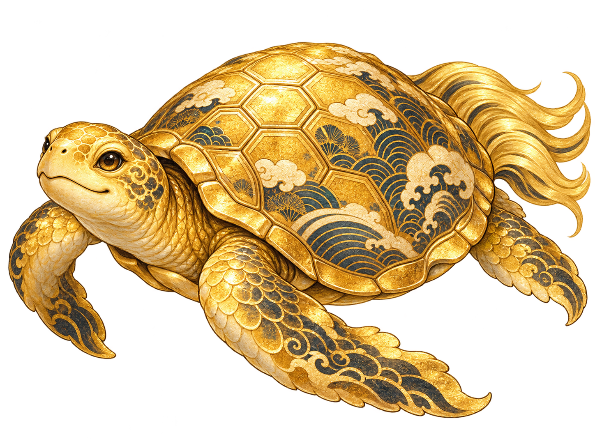
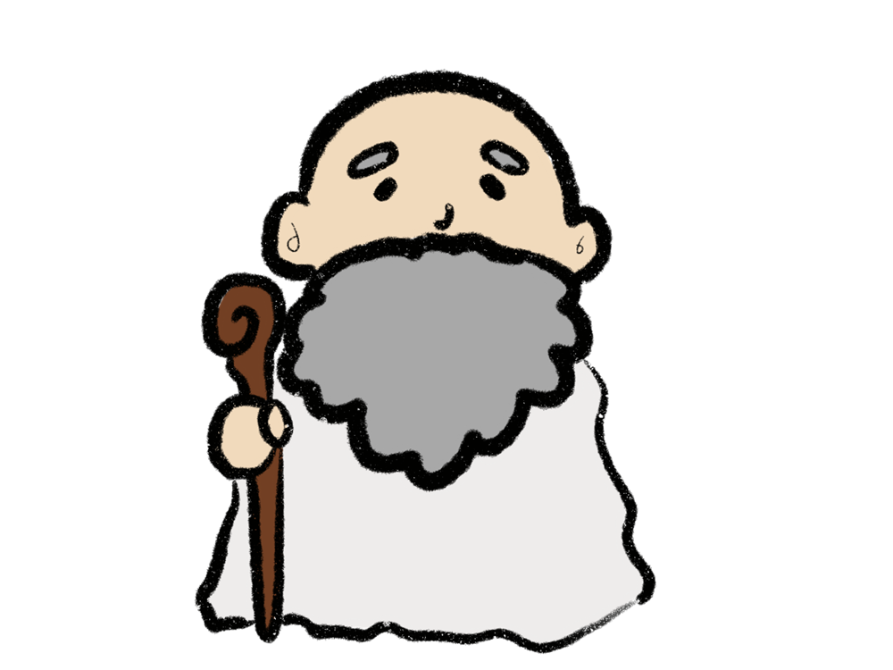

QUEST COMPLETE
知恵をつなぎし者
黄金の伝説ここに現る
LEGEND FOUND

CLEAR!
すべての謎を解き明かし、長く眠っていた伝説の金の亀を見つけ出しました。

知恵をつなぎ、最後まであきらめなかったその心。 それこそが、金の亀が認めたほんとうの宝じゃ。
知恵をつなぎ、最後まであきらめなかったその心。
それこそが、金の亀が認めたほんとうの宝じゃ。
今日の冒険を、どうか忘れずにな。見事であった！
CERTIFICATE OF DISCOVERY
松山城に隠れた伝説を解き明かした！
親子で挑戦 おうちで謎解き『松山城にかくれた金の亀をさがせ！』
達成日は、この端末の中だけに保存されます。
ページ内でのSNSログインやアカウント連携はありません。いつも使っている投稿・共有画面を直接開きます。
✦
あそんでくれてありがとう！